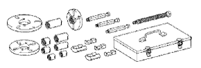

リヤディファレンシャル キャリア オイルシール（4WD） 準備品 【取り外し】
| 09308-10010 | オイルシールプラー | |
 | 09330-00021 | コンパニオンフランジ ホールディングツール |
| 09556-12010 | ドライブピニオンフロント ベアリングリムーバー | |
 | 09930-00010 | ドライブシャフトナットチゼル |
|  | 09950-30011 | プラ- Ａ セット |
 | (09951-03010) | アッパープレート |
 | (09953-03010) | センターボルト |
 | (09954-03010) | アーム |
 | (09955-03030) | ロアープレート130 |
 | (09956-03020) | アダプター18 |
 | 09012-2C520 | ディープソケットレンチ 24mm |
 | QL-100N | QLトルクレンチ（100N) (株)バンザイ·(株)イヤサカ扱い |
| トヨタ純正 ハイポイドギヤオイル ＳＸ |